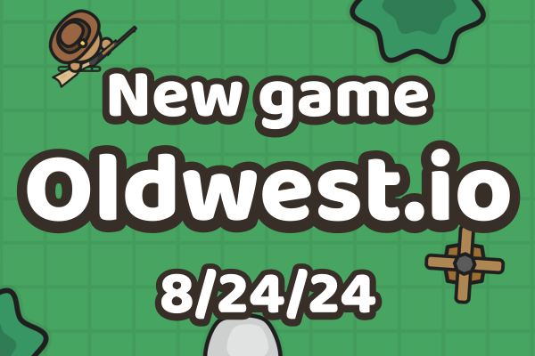
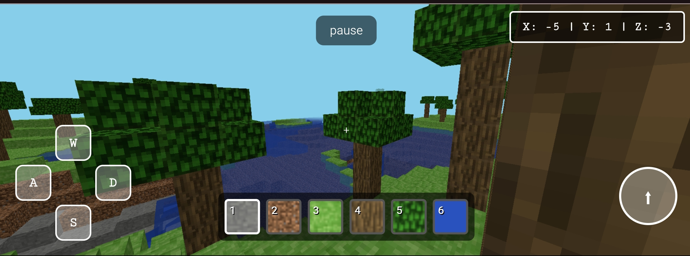
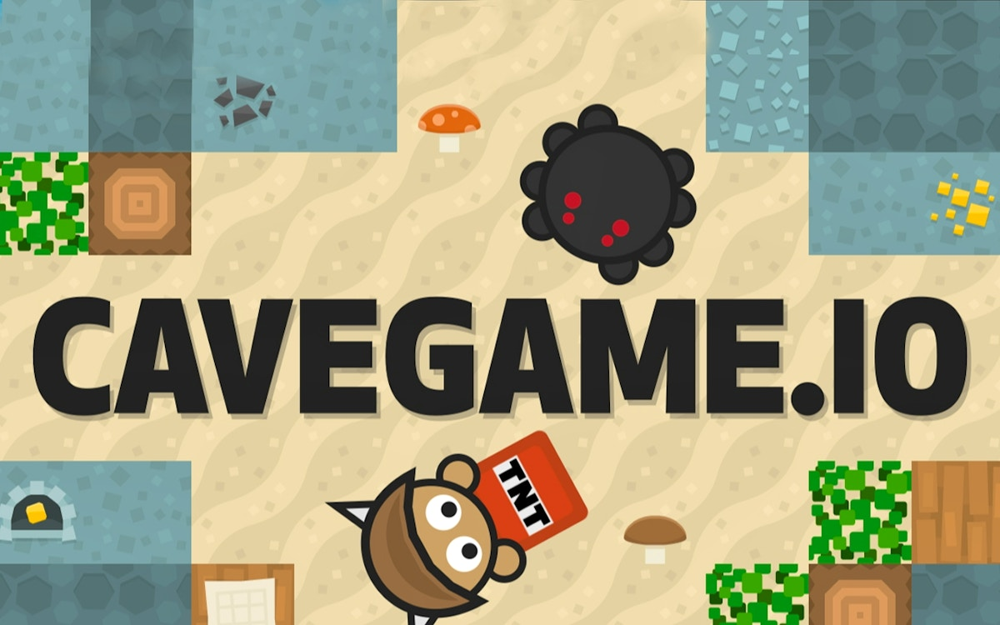

The Hard Truth About Your Cavegame.io Runs
You keep dying in the caves. You spawn, you mine, you get jumped by a guy with diamond gear, and you lose everything. Stop whining about lag. I have 2000 hours in Cavegame.io. I have seen every pathetic way a player can throw away their gold. You think you are losing because of bad luck. You are losing because you ignore the core mechanics of this game. You leave your base open. You waste your XP. You get ambushed because you do not use SHIFT. Read this guide. Memorize these fatal mistakes. If you fix these, you will actually climb the leaderboard instead of staying stuck in the dirt. Let us get to work.

Mistake 1: You Ignore the Sneak Mechanic
What you’re doing wrong: You sprint through the caves with your pickaxe swinging, making noise and drawing attention. You never press SHIFT to sneak. When you hear a skeleton or see a player mining nearby, you just keep walking in a straight line. You treat this game like a mindless clicker instead of a tactical survival shooter. You completely fail to use the sneak mechanic to hide your movement from both hostile mobs and greedy players lurking in the dark. You just walk right into their aggro range and wonder why you die.
Why it’s killing your runs: Sneaking is your absolute best defense against ambushes in the deep caves. If you do not sneak, zombies and spiders spot you from further away, overwhelming you before you can even draw your sword. Worse, other players see you coming from a mile away. They set up TNT traps or just wait for you to mine a block before shooting you in the back. Walking normally gives away your exact position on the map. You become an easy target for anyone looking to steal your hard-earned gold.
How to fix it: Hold SHIFT whenever you enter a new cave section or approach a mob spawner. Move slowly and listen for audio cues. When you spot a player, immediately stop and sneak behind cover. Use the darkness to your advantage. If you need to cross an open area, crouch and stick to the shadows. Only move at full speed when you are safely inside your own reinforced obsidian base. Make sneaking your default state in the wild. It keeps you alive and lets you control the engagement.
Mistake 2: You Waste Your XP on Junk
What you’re doing wrong: You kill a few zombies, grab a tiny bit of XP, and immediately run to the enchantment table. You right-click your basic iron sword and dump all five levels into it. You do this every time you get a little bit of experience. You treat the enchantment table like a candy machine instead of a strategic investment. You fail to save up your XP for high-tier enchants. You just burn your levels on weak gear that breaks in two hits anyway.
Why it’s killing your runs: The enchantment table allows up to 30 levels of XP at once. Low-level enchants are practically useless in high-tier PvP. When you dump small amounts of XP, you waste the massive power spike that comes from max-level enchantments. A fully enchanted diamond sword obliterates a poorly enchanted iron one. By spreading your XP thin, you never get the combat advantage you need. You end up in fights with garbage gear, losing your items and letting your opponent take your gold.
How to fix it: Stop enchanting immediately after a mob kill. Grind mobs at a spawner until you have a massive pool of XP. Save it up until you can afford at least 20 to 30 levels. Then, right-click your best diamond gear on the enchantment table. Focus your max-level enchants on your primary weapon and your chestplate. This gives you the highest possible damage and survivability. Only enchant your tools when you have surplus XP. Hoard your experience like it is gold, because it literally buys you victory.
Mistake 3: You Build Bases Out of Dirt
What you’re doing wrong: You mine some gold, buy a few items, and build your base out of cobblestone and wood. You think a few walls of dirt will protect your gold generator. You leave your roof open or use weak materials for the doors. You do not craft reinforced obsidian. You just slap together a shack and expect it to keep raiders out. You completely ignore the core defensive building mechanics of the game. You treat base building like an afterthought instead of a fortress.
Why it’s killing your runs: Raiders do not care about your wooden shack. They will craft TNT, throw it at your weak walls, and detonate it with a right-click. Your cobblestone shatters in seconds. Once they blow a hole, they walk in and steal your gold generator. All the time you spent mining and farming is gone in an instant. Weak building materials mean your base is just a free loot piñata for anyone with a stack of explosives. You lose your leaderboard position because you were too lazy to craft proper defenses.
How to fix it: Craft reinforced obsidian for every single outer wall of your base. It takes a long time for enemies to break through it. Build a small, enclosed room specifically for your gold generator. Do not make the base massive; make it dense and heavily fortified. Use traps like TNT hidden behind weak blocks at the entrance. If a raider blows the outer wall, they should trigger your trap. Reinforced obsidian is the central item for base building. Use it, or accept that you will get raided.

Mistake 4: You Misuse Your Grappling Hook
What you’re doing wrong: You craft a grappling hook and just spam left-click everywhere you go. You shoot it at the floor to move slightly faster. You use it in tight cave corridors where it immediately gets stuck on the ceiling. When a player shoots at you, you panic and pull yourself directly toward them instead of away. You completely fail to understand the verticality and escape mechanics this tool provides. You treat it like a cheap mobility toy instead of a life-saving evasion tool.
Why it’s killing your runs: The grappling hook is your only reliable escape mechanism in the open caves. If you pull yourself toward an enemy, you close the gap and get killed instantly. If you use it in tight spaces, you freeze in place and become a sitting duck for skeleton arrows. You waste your cooldowns and leave yourself completely vulnerable. Without proper hook usage, you cannot disengage from a losing fight. You just die standing there, dropping all your hard-farmed resources for the enemy to pick up.
How to fix it: Only use the grappling hook to escape or gain high ground. Left-click to shoot the hook at a ceiling or high wall. Then press right-click or Space bar to pull yourself up and away from danger. Never use it to run at an enemy. In tight caves, keep it in your inventory unless you need to cross a massive gap. Practice the timing of the pull in a safe area. When ambushed, hook to the ceiling immediately to break the enemy line of sight and heal.
Mistake 5: You Hoard Items Instead of Using the Shop
What you’re doing wrong: You farm mushrooms and chop trees until your inventory is completely full. Then you just run around with a full inventory, unable to pick up gold or diamonds. You never press E to open the shop. You do not sell your extra saplings, spores, or mob drops. You think holding onto physical items is safer than holding gold. You completely ignore the economic loop of the game. You let your inventory cap your earning potential just because you are too lazy to manage a shop.
Why it’s killing your runs: Gold is the only metric that matters for the leaderboard. Physical items in your inventory do not increase your rank. If you die with a full inventory of wood and bones, you lose it all and gain zero leaderboard progress. By not using the shop, you stagnate. Other players are selling their excess farm items, buying your gear, and climbing the ranks while you stay stuck at the bottom. You are literally throwing away free gold by refusing to sell your surplus resources.
How to fix it: Press E and set up a shop immediately. You can sell up to 5 items at one time. Fill those slots with your most abundant farmable items like mushrooms or bones. Check the prices and adjust them to sell quickly. Every time your inventory gets full, go to your base and sell the excess. Convert your physical resources into gold. Gold secures your leaderboard position and lets you buy better gear from other players. The shop is your engine for wealth. Use it constantly.
Mistake 6: You Detonate TNT Too Early
What you’re doing wrong: You craft TNT and immediately throw it at an enemy with left-click. You do not wait for it to land. You panic and detonate it with right-click or Space bar while it is still in the air. You blow yourself up in the process. You use TNT like a generic grenade without respecting the blast radius and timing. You fail to use the environment to your advantage. You just throw explosives blindly and wonder why you are the one respawning.
Why it’s killing your runs: TNT in Cavegame.io has a massive blast radius that damages the thrower. If you detonate it mid-air, you take full damage and die, wasting your resources. Even if you miss the enemy, you kill yourself. If you throw it at a wall, it destroys your own base if you are not careful. Wasting TNT means you lose the gold you spent to craft it. You give the enemy a free kill and hand them your gold. It is a complete failure of basic combat mechanics.
How to fix it: Throw the TNT with left-click and let it land. Wait for it to be right next to the target or inside their base. Only press right-click or Space bar to detonate when it is in the optimal position. If you are in a tight space, do not throw it at all. Use TNT to breach reinforced obsidian walls from a safe distance. Always calculate the blast radius before you throw. If you are unsure, do not throw it. Patience with explosives wins fights.

The Bottom Line
The difference between a top-ranked player and a casual corpse is resource management and mechanical discipline. You need to hoard your XP for max enchants, use reinforced obsidian for your base, and convert your farm goods into gold via the shop. Stop rushing into fights without your grappling hook ready. Stop walking around without sneaking. Master these specific Cavegame.io mechanics, and you will absolutely dominate the leaderboard. Now get back in the cave, fix your mistakes, and stop wasting my time.